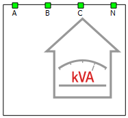
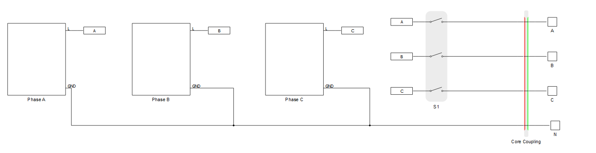
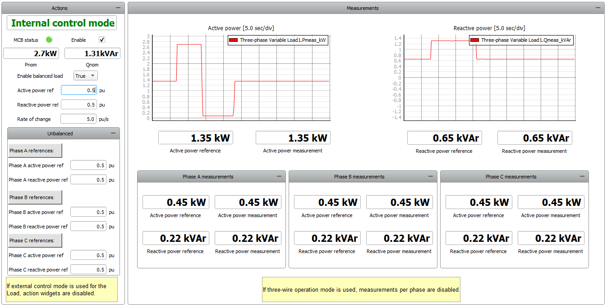

Three-phase Variable Load
Description of the Three-phase Variable Load component in Schematic Editor.

Description
The Three-phase Variable Load component is a Schematic Editor library block from the Loads section, of the Microgrid library. This component is based on variable impedance, built using variable passive components. It supports distorted voltage on its terminals, meaning it will consume the demanded power when distortions appear. This load can operate as a balanced or unbalanced load, since it's comprised of three independent single-phase units where each one is connected to a corresponding phase and neutral point. If the load operates in a 3-wire system, only one power reference for active and reactive power can be set, which corresponds to the total power consumption. There are two options for providing the references:
- Internal: Through SCADA inputs which are located inside of the component
- External: By using signal processing to calculate the references and provide those as signal processing inputs. Enabled by checking the corresponding property in Tab: "Inputs/Outputs".
Three-phase Variable Load schematic block diagram
The component consists of three Single-phase cores. Those cores operate independently, ensuring that unbalanced operation is possible. The electrical part of the model of one of the cores is shown in Figure 2 in Single-phase Variable Load. The control algorithm for each of the cores is described in Control algorithm of a Single-phase Variable Load.
Component dialogue box and parameters
The Three-phase Variable Load component dialogue box consists of four tabs for specifying parameters of the component.
Tab: "General"
In this component tab, general parameters of the Three-phase Variable Load can be specified.
| Parameter | Name | Description |
|---|---|---|
| Nominal voltage | Vnom_rms | Load nominal voltage. [V] |
| Nominal frequency | fnom | Load nominal frequency. [Hz] |
| Nominal apparent power | Snom | Load nominal apparent power. [VA] |
| Nominal power factor | pf_nom | Load nominal power factor. |
| Distorted voltage support | include_harmonic | Include distorted voltage support. |
| Harmonic order list | harmonic_list | Expected harmonic order value of voltage on inputs of load. |
| Execution rate | execution_rate | Execution rate of the internal signal processing. [s] |
| CPU core | hil_cpu_core_id | Mapping CPU for signal processing components. |
| Enable 3-wire | enable_three_wire | Enables load to operate in three-wire systems. |
| Place voltage measurements in adjacent core | voltage_meas_in_adj_core | Available only if load is used in a three-wire system with core partitioning element. When enabled, voltage measurements are placed in adjacent core, to conserve resources in the load component's core (at the expense of resources in the adjacent core). |
Tab: "Advanced snubber options"
In this component tab, additional parameters that are related to the Load's snubber can be specified.
| Parameter | Name | Description |
|---|---|---|
| Snubber apparent power | Z_ind_pu | Apparent power that snubber is consuming from nominal power. [pu] |
| Power factor of the snubber | pf_snubber | Power factor of the snubber. |
Tab: "Circuit partitioning"
In this component tab, an internal core coupling element can be added and parametrized. You can choose between Core couplings - Ideal Transformer (IT based) or Core couplings - TLM. The location of the added core coupling component is shown in Figure 2.
| Parameter | Name | Description |
|---|---|---|
| Core coupling type | cpl_type | Inserts coupling component (IT based or TLM) in the load component. If None is chosen, no partitioning is performed |
| Snubber resistance | R_snb | If IT based coupling element is chosen, this displays the resistance of the current source side. [Ω] |
| Snubber capacitance | C_snb | If IT based coupling element is chosen, this displays the capacitance of the current source side. [F] |
| Coupling current side orientation | cpl_orientation | Orientation of the current source side. Can be set as facing the Load or facing the Grid (i.e. away from the load). |
| Fixed_snubber | cpl_fixed_snb | Used for choosing between a fixed and non-fixed snubber. |
| Coupling inductance | cpl_inductance | If TLM coupling element is chosen, this displays the value of its inductance. [H] |

Tab: "Inputs/Outputs"
In this component tab, external inputs/outputs can be enabled.
| Parameter | Name | Description |
|---|---|---|
| Enable external references | enable_ext_ref | Enable external control mode. |
| Enable output vector | enable_outputs | Enable output vector with measurements. |
Three-phase Variable Load inputs and outputs
When the external control mode is enabled, the appropriate signal processing ports appear on the left side of the component. Available inputs are given in Table 5.
Available outputs are given in Table 6. These measurements are available through probes inside of the component, but can also be available as an output vector with 19 elements.
| Number | Input | Description | Signal range | Default value |
|---|---|---|---|---|
| 0 | Enable | A digital input that enables the load. The load is enabled when the input value is high. | 0 or 1 | 0 |
| 1 | Pref | In case of internal control, there are three SCADA inputs that set the active
power consumption reference for each phase separately. [pu] In case of external control, it is an array of 3 elements, where a single element corresponds to a single phase. |
0 to 1 | 0.5 |
| 2 | Qref | In case of internal control, there are three SCADA inputs that set the reactive
power consumption reference for each phase separately. [pu] In case of external control, it is an array of 3 elements, where a single element corresponds to a single phase. |
0 to 1 | 0.5 |
| 3 | Balance_en | A digital input that enables balanced load. The load operates as balanced when the input value is high. | 0 or 1 | 1 |
| 4 | Pref_bal | An analog input that sets the active power consumption reference for the balanced operation mode. [pu] | 0 to 1 | 0.5 |
| 5 | Qref_bal | An analog input that sets the reactive power consumption reference for the balanced operation mode. [pu] | 0 to 1 | 0.5 |
| 6 | ROC | An analog input that sets the rate of change of the power reference ramping. [pu/s] | >= 0.001 | 5 |
| Number | Output | Description |
|---|---|---|
| 0 | Enable_fb | A digital output describing the load's enable/disable state. The load is enabled if the output is high. |
| 1 | MCB_status | A digital output reporting the information about the state of the main circuit breaker (contactor). The contactor is closed if the value is high. |
| 2 | Pref_A_fb_kW | An analog output with the value of the phase A applied active power reference of the load [kW] |
| 3 | Qref_A_fb_kVAr | An analog output with the value of the phase A applied reactive power reference of the load [kVAr] |
| 4 | Pmeas_A_kW | An analog output reporting the value of the phase A active power output of the load. [kW] |
| 5 | Qmeas_A_kVAr | An analog output reporting the value of the phase A reactive power output of the load. [kVAr] |
| 6 | Pref_B_fb_kW | An analog output with the value of the phase B applied active power reference of the load [kW] |
| 7 | Qref_B_fb_kVAr | An analog output with the value of the phase B applied reactive power reference of the load [kVAr] |
| 8 | Pmeas_B_kW | An analog output reporting the value of the phase B active power output of the load. [kW] |
| 9 | Qmeas_B_kVAr | An analog output reporting the value of the phase B reactive power output of the load. [kVAr] |
| 10 | Pref_C_fb_kW | An analog output with the value of the phase C applied active power reference of the load [kW] |
| 11 | Qref_C_fb_kVAr | An analog output with the value of the phase C applied reactive power reference of the load [kVAr] |
| 12 | Pmeas_C_kW | An analog output reporting the value of the phase C active power output of the load. [kW] |
| 13 | Qmeas_C_kVAr | An analog output reporting the value of the phase C reactive power output of the load. [kVAr] |
| 14 | Balance_en_fb | A digital output reporting whether the load operates as balanced or unbalanced load. |
| 15 | Pref_fb_kW | An analog output with the value of the three-phase applied active power reference of the load [kW] |
| 16 | Qref_fb_kVAr | An analog output with the value of the three-phase applied reactive power reference of the load [kVAr] |
| 17 | Pmeas_kW | An analog output reporting the value of the three-phase active power output of the load. [kW] |
| 18 | Qmeas_kVAr | An analog output reporting the value of the three-phase reactive power output of the load. [kVAr] |
| 19 | Phase X.V | Measurement of voltage between connection of phase X and neutral point (X can
be either A, B, or C corresponding to the name of the desired phase). If the Place voltage measurements in adjacent core property is enabled, these measurements will be found as Phase X_V. |
| 20 | Phase X.I | Phase current measurement of phase X (X can be either A, B, or C corresponding to the name of the desired phase). |
A dedicated Library Widget for controlling the Three-phase Variable Load component is available.

Example model
Overall behavior and control methodologies can be better understood with the use of the given example:
Model name: 3ph_variable_loadtse
SCADA interface: 3ph_variable_load.cus
Path: /examples/models/microgrid/variable load/Three-phase Variable Load